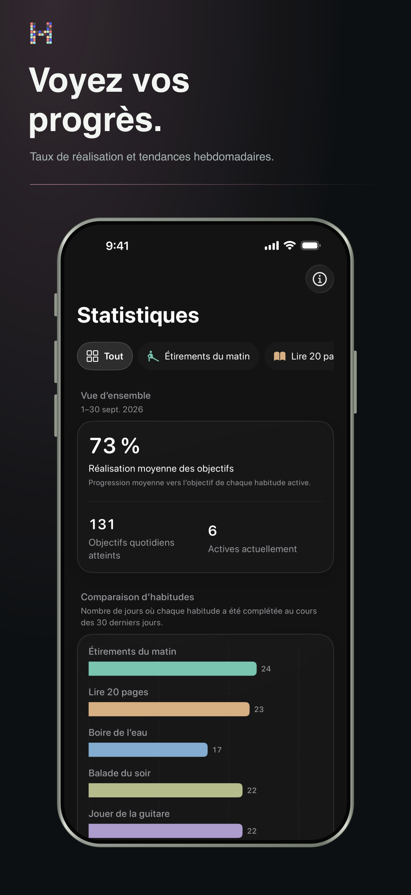

Des tendances, pas de pression
Comprenez ce qui vous aide à revenir.
Consultez vos séries, taux de réussite et tendances à long terme sans transformer votre routine en tableur.
- Séries actuelle et record
- Tendances et répartition des réussites
- Contexte hebdomadaire, mensuel et annuel